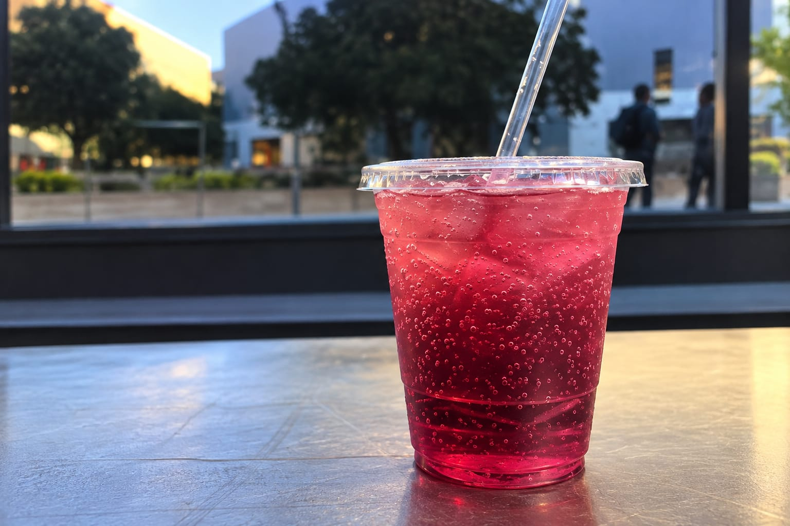
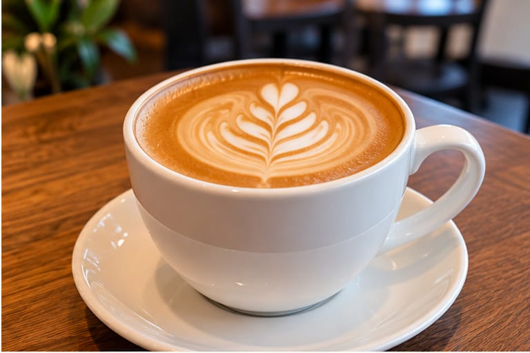
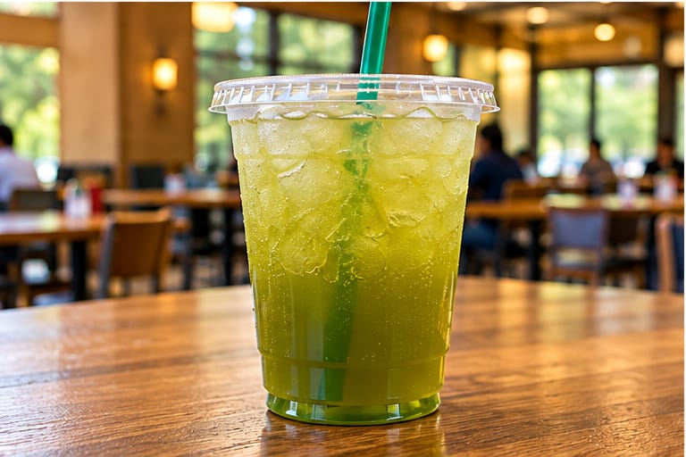
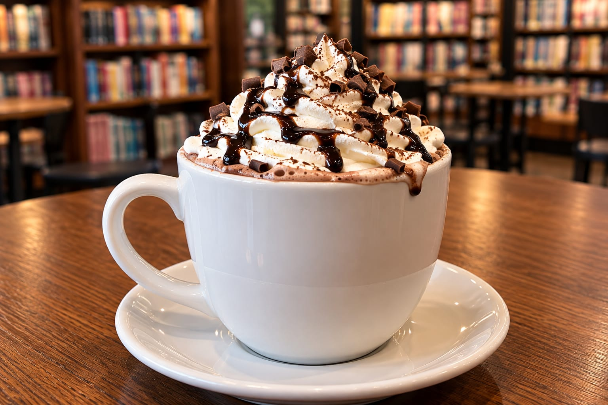

Italian soda at Bytes
459 Lagunita Drive, Stanford, CA
When's the last time you've had an Italian soda? It had been a while for me, but I wanted to join my friend for a new caffeinated beverage at Bytes and I became reacquainted with the combination of fizzy water and artificial fruit syrup. Italian sodas are not so sweet as a normal soda and not so boring as a flavored carbonated water. The Italian sodas at Bytes also have cream in them (or maybe they do if you ask). I haven't tried this, which makes it a nice caffeine-free shop alternative for the times when you're feeling a refreshing drink that doesn't have caffeine or milk.
Recommendation : Raspberry Italian soda

Coffee at Coupa Café
Coupa Café is a classic. It’s a great place to grab a cup of coffee and get some work done. Their coffee is reliably good, and the atmosphere is perfect for studying or catching up with friends. Whether you like a simple drip coffee or something more complex, Coupa Café has options for everyone.
Recommendation : Vanilla Bean Latte

Iced green tea at Arrillaga Family Dining Commons
Arrillaga Family Dining Commons, Stanford, CA
Iced green tea is a refreshing option, especially on a warm day. It is light, not too sweet, and pairs well with a meal. It is a simple and refreshing drink to enjoy on campus.
Recommendation :Iced green tea with lemonVanilla Bean Latte

Hot chocolate at The Stanford Bookstore Café
The Stanford Bookstore Café, Stanford, CA
The hot chocolate at the Stanford Bookstore Café is rich, creamy, and perfect for a cozy break. It is not too sweet and has a deep chocolate flavor that makes it a great treat, especially during the colder months. It is the perfect drink to enjoy while browsing books or taking a break from studying.
Recommendation : Hot chocolate with whipped cream
